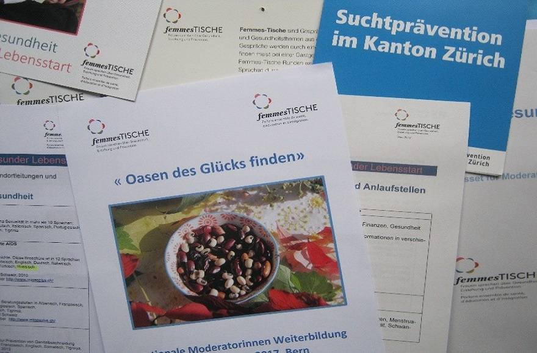

Что такое Femmes-Tische?
Программа Femmes-Tische («Женский стол») предоставляет ее участницам возможность обсуждения разных тем на родном языке. Каждый раз за чашкой чая, в неформальной обстановке, собирается 6-14 женщин. Ведущая группы при помощи фото- или киноматериала знакомит участниц с новой темой и руководит дальнейшим ее обсуждением. Благодаря новой информации и обмену мнениями на родном языке участницы получают помощь и поддержку в каждодневных бытовых проблемах. А также у участниц есть возможность ближе познакомиться друг с другом и создать новые контакты.
Подробнее о программе